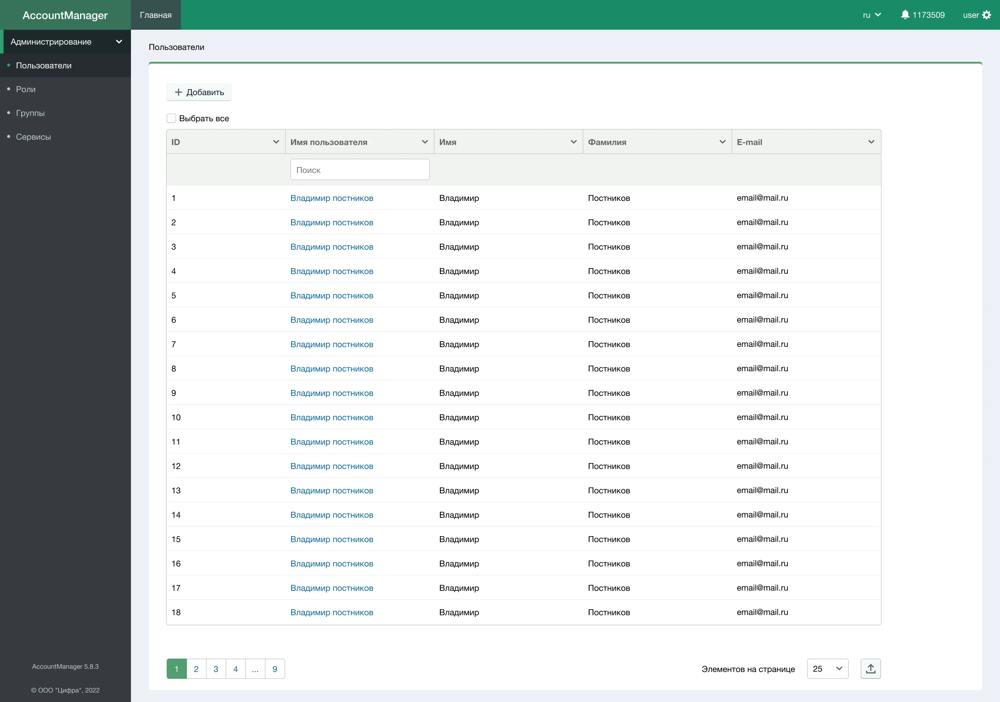
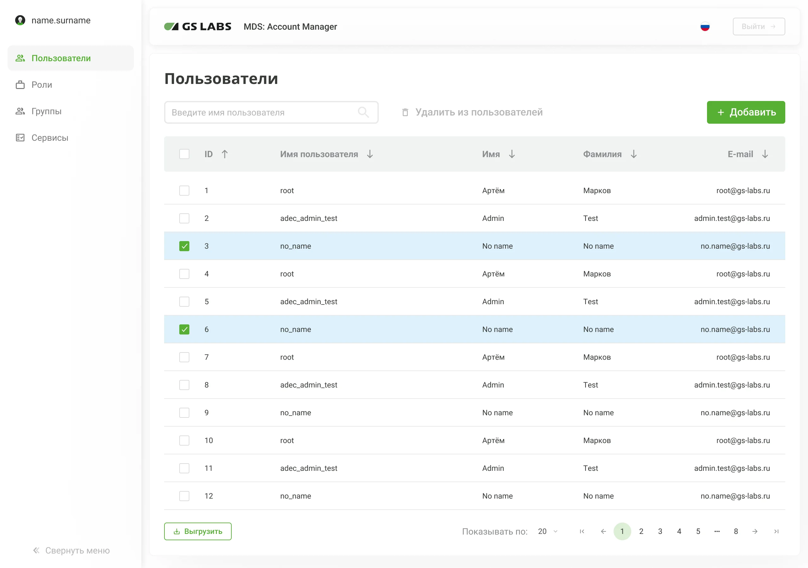
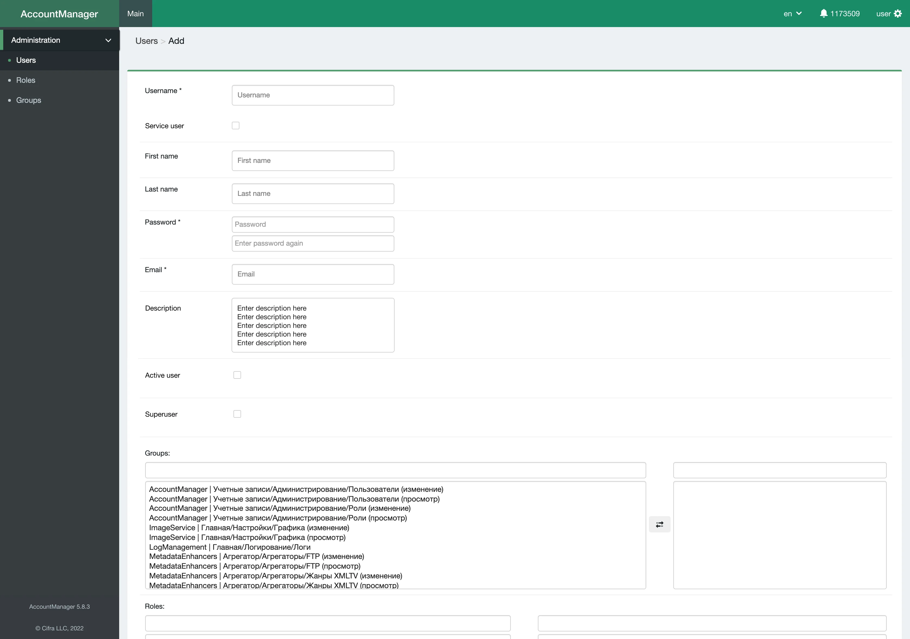
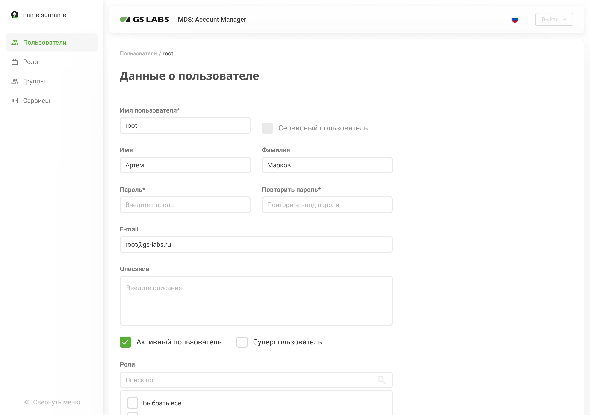
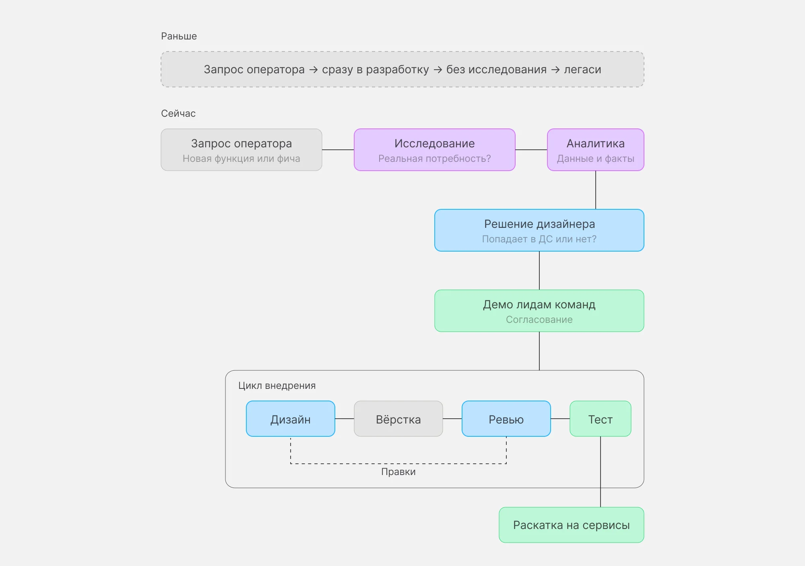
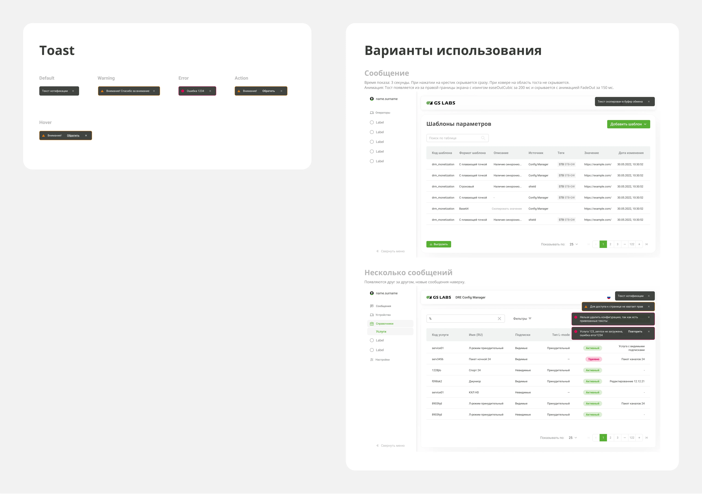
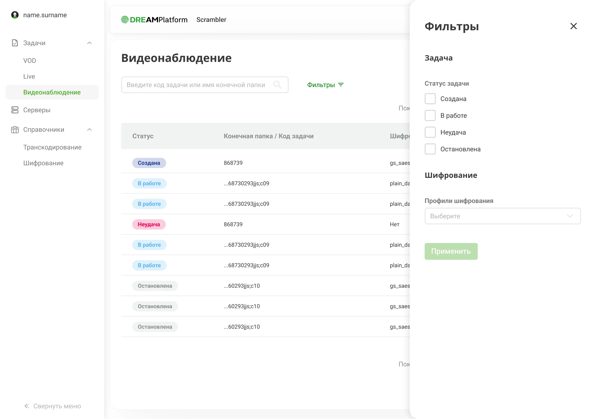
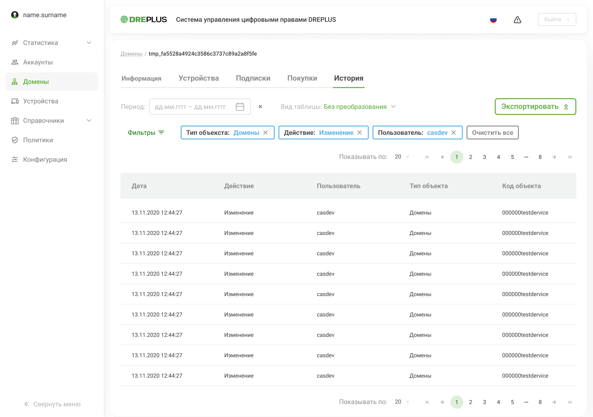
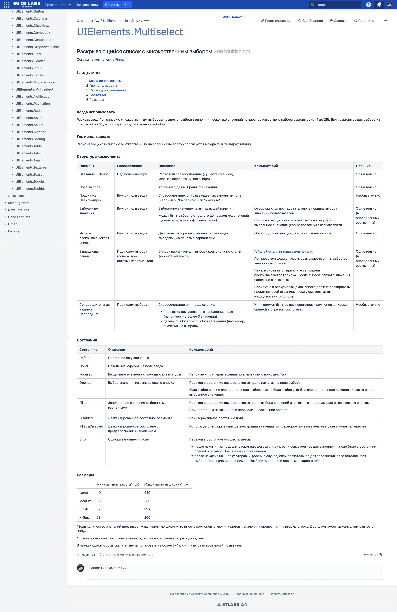
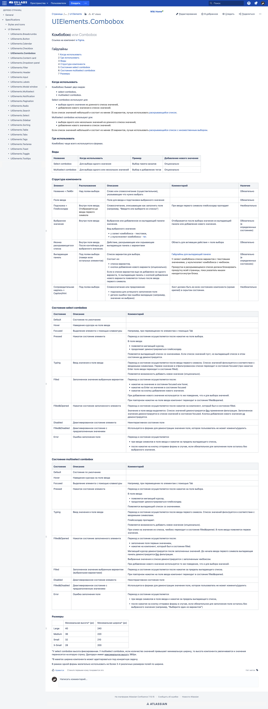

Дизайн-система,
вычистившая
10 лет легаси
DREAMPlatform — корпоративная платформа цифрового ТВ (IPTV/OTT) от GS Labs. Через неё операторы управляют контентом, подписками, рекламой и обновлениями устройств для миллионов абонентов. Среди клиентов: Триколор, крупнейший оператор цифрового ТВ в России. Я создала дизайн-систему с нуля для 6 сервисов платформы.
платформы
с документацией
разработки
системы

10 лет без дизайнера, как это выглядело
Платформа DREAMPlatform состоит из 6 сервисов:
- MDS (метаданные и витрина контента),
- DRM (управление доступом и подписками),
- UMS (обновления устройств),
- CS (точка входа и балансировка запросов),
- DREASYS (рекламная система),
- App Boutique (магазин приложений).
У каждого — своя административная панель для операторов.
Около 10 лет эти панели строились разными командами на Bootstrap без участия дизайнера. Интерфейсы развивались хаотично: каждая команда добавляла функционал сама, без общей системы и без UX-исследований. Функционал копился, но никогда не пересматривался. Операторы работали в интерфейсах, где часть элементов была им непонятна или не нужна.
Проблема давно лежала в бэклоге. Все понимали, что нужна единая система, но задача только разрасталась. Наконец её взяли в работу.
Ключевые решения
За год я приняла много решений. Вот 3, которые лучше всего показывают мой подход:
1. Легаси
ДС как чистка легаси, а не косметика
Контекст. Изначально хотели просто перекрасить сервисы в брендовые цвета, визуально объединить и упростить поддержку. Но я несколько раз ездила в офис Триколора, сидела рядом с операторами, наблюдала, как они работают. И увидела, что проблема глубже: не в том, как выглядят кнопки, а в том, что значительная часть функционала мёртвая.
Решение. Предложила не ограничиваться визуальным обновлением, а параллельно вычистить легаси. Команда поддержала. Вместе с аналитиками определила, что реально используется. В дизайн-систему попадало только нужное. Остальное убирали.
В MDS, например, формы содержали поля, которые операторы постоянно пропускали. Не понимали их назначения и боялись ввести неверные данные. Некоторые кнопки были задизейблены самой разработкой «на всякий случай». Выявили, что это легаси, который никогда не использовался. Убрали. Формы стали короче, операторы перестали спотыкаться.
Результат. ДС стала продуктовым фильтром. Не визуальное обновление, а переосмысление того, что должно быть в продукте.
Полный редизайн UX-флоу 6 сервисов был нереалистичен за год с командой из 2 дизайнеров. Осознанно ограничились чисткой легаси и унификацией, без перепроектирования сценариев.


MDS Account Manager: список пользователей


MDS Account Manager: редактирование пользователя
2. Процесс
ДС изменила культуру разработки
Контекст. Годами функционал добавлялся без аналитики и без координации между сервисами. Каждая команда жила сама по себе. Оператор просит — разработка делает. Так копился хаос.
Решение. Работа над ДС сформировала новый процесс, который я закрепила как стандарт: любой запрос на новый функционал проходит через исследование и согласование. Я задала критерии, что попадает в ДС, а что нет. Решения принимались совместно с коллегой-дизайнером и разработкой, но критерии состава системы и продуктовую логику вела я. Ввела регулярные демо лидам команд и бизнесу. Каждый компонент проходил согласование перед внедрением.
Результат. Сервисы перестали жить автономно. Добавить что-то «потому что оператор попросил» уже не получится. Запрос сначала проходит через исследование, потом через ДС, потом в продукт. Система стала точкой координации между 3 командами, которые раньше не взаимодействовали.

Процесс работы ДС: запрос → исследование → решение → внедрение
3. Архитектура
Осознанное упрощение ради внедрения
Контекст. Команды разработки с разным стеком. Привыкли решать UI сами. Если компоненты сложные или негибкие, команды обойдут систему и продолжат делать по-своему.
Решение. Осознанно делала компоненты простыми в сборке и переиспользовании: минимум вложенностей, без лишних сущностей, универсальные. Единая система цветов, типографики, отступов для всех сервисов. 40+ компонентов с документацией в Confluence. По каждому я описала, где и как он используется.
Результат. Все команды реально используют ДС, а не обходят её. Обновление компонента автоматически раскатывается по всем сервисам. Новый сервис собирается на существующей базе, а не с нуля. После моего ухода ДС подхватил другой дизайнер. Система продолжает жить и развиваться.

Тост и применение

Мультиселект и применение
Как Senior Product Designer на проекте
- Финальный проект в GS Labs за 6 лет работы. Задача назрела, я хотела её взять.
- Изучила интерфейсы 6 сервисов до старта работы: выявила повторяющиеся компоненты и общие паттерны.
- Подключила второго дизайнера, распределила компонентную работу.
- Выстроила цикл с выделенными фронт-разработчиками: дизайн → вёрстка → ревью у меня → тест → раскатка.
- Применила систему пилотно на одном сервисе, после доказательства ценности — масштабировала на остальные.

DREAMPlatform Scrambler

DREPLUS
От UI-кита до системы для всей платформы
Выявила проблемы: мёртвый легаси-функционал, разрозненные интерфейсы, отсутствие дизайн-процесса.
Базовые компоненты для 1–2 сервисов. Доказали ценность подхода, команды приняли.
40+ компонентов с документацией в Confluence. Чистка легаси. Единый интерфейс для всех сервисов.
ДС живёт и развивается без меня — подхватил другой дизайнер. Процесс разработки изменился: от хаотичных запросов к схеме «аналитика → решение → компонент». Новые сервисы собираются на готовой базе.
По обратной связи от руководителей Триколора, операторы перешли на единый интерфейс быстрее, чем ожидалось. Переключение между сервисами перестало быть проблемой.

Multiselect — документация в Confluence

Combobox — документация в Confluence
Что я бы сделала иначе
Сейчас бы начала ещё раньше с пилота на одном сервисе. Без него, который показал результат, полную ДС для 6 сервисов никто бы не утвердил. В проекте, где до тебя не было ни одного дизайнера, сначала доказываешь ценность на малом, потом масштабируешь.
Главное, что я вынесла из проекта: ДС — это не библиотека компонентов, а инструмент координации между командами. Без процесса согласования компоненты остались бы в Figma.